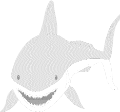

Par Wai Nam Man d’Angleterre, 12 ans (initialement en anglais)
Pourquoi, oh pourquoi,
Nous tuons les baleines
juste pour la nourriture ?
En écoutant les baleines s'éclabousser dans l'eau,
En regardant les massacres à la télé.
Je peux voir la queue des baleines,
Battre comme une aile d'oiseau,
Entre elles, les baleines chantent.
Me voilà en haut de la falaise,
Le son des baleines illumine le ciel.
Je peux sentir le parfum des baleines.
Je peux voir les bateaux
aux grandes voiles.
Au point du jour,
Je vois le reflet du soleil
sur l'eau
Les baleines doivent
certainement savoir
Que les hommes ont gagné.